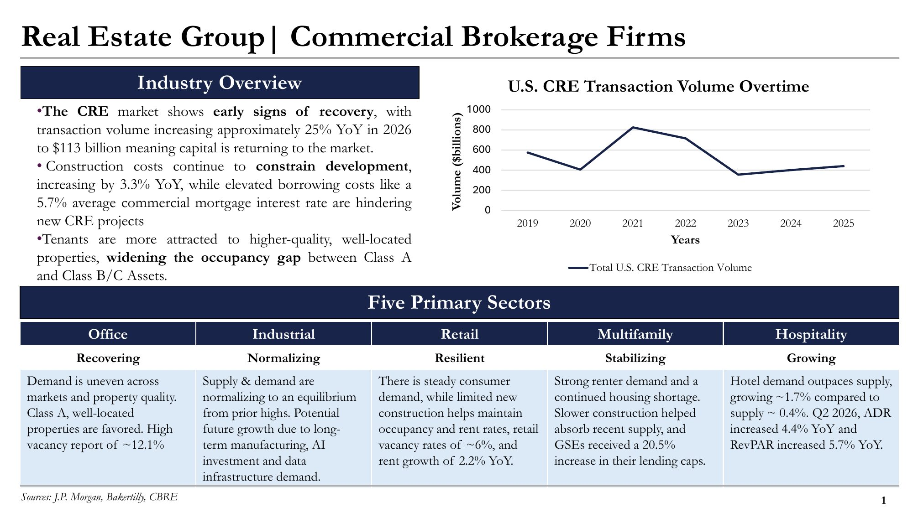

← All projects
Equity / valuation
Commercial Brokerage Firms: CRE Case Study
An industry overview of U.S. commercial real estate and a comparable-company analysis of six listed brokerage and services firms, ending in a Buy recommendation on Jones Lang LaSalle.
Recommendation
Buy JLL · price target $378.15
JLL's earnings momentum and diversified revenue base position it to benefit from a recovering CRE market. In Q2 2026, EBITDA grew 32% and adjusted EPS grew 59%, with leasing advisory revenue up about 24% and capital markets up about 19%.
Price target$378.15vs. $340.07 current
Implied upside11%Buy
JLL EV / EBITDA11.5xpeer median 11.3x
U.S. CRE volume, 2026+25%YoY, to $113B
The deck
Use the arrows, thumbnails, arrow keys or swipe to move between slides.

What's covered
- Industry overview: the CRE recovery, cost and rate headwinds, and the outlook for office, industrial, retail, multifamily and hospitality.
- Comparable companies: six fee-based brokerage and services firms, from global platforms (CBRE, JLL) to transaction-driven firms (Marcus & Millichap, Newmark).
- Valuation: EV/Revenue, EV/EBITDA, EV/EBIT and P/E across the peer set, with average and median benchmarks.
- Recommendation: JLL as the top performer, with a price target, growth drivers and key risks.
Sources cited in the deck: J.P. Morgan, Baker Tilly, CBRE, JLL, company filings (SEC) and PitchBook. Prepared for educational purposes. Not investment advice.